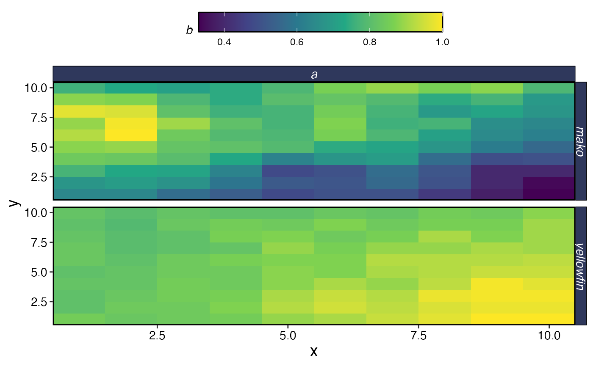
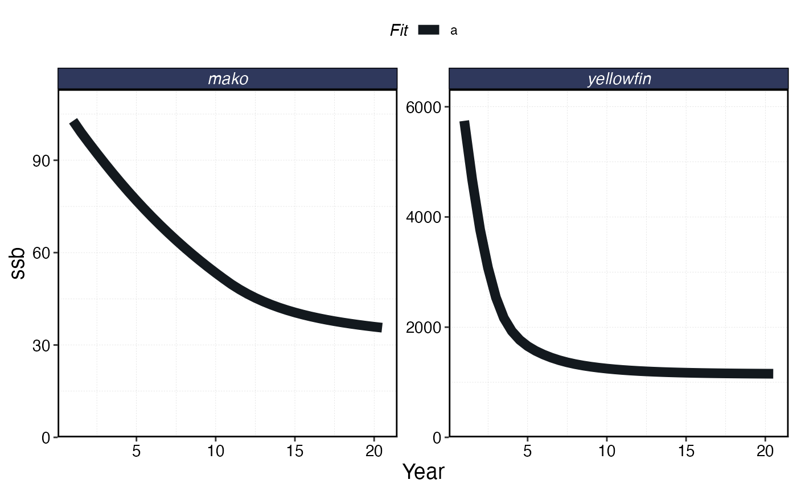
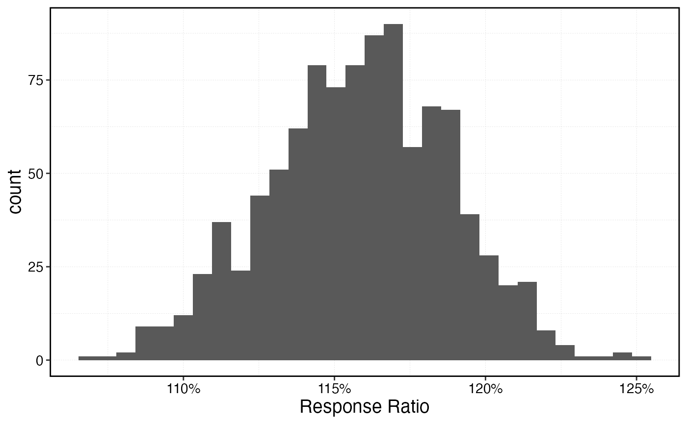
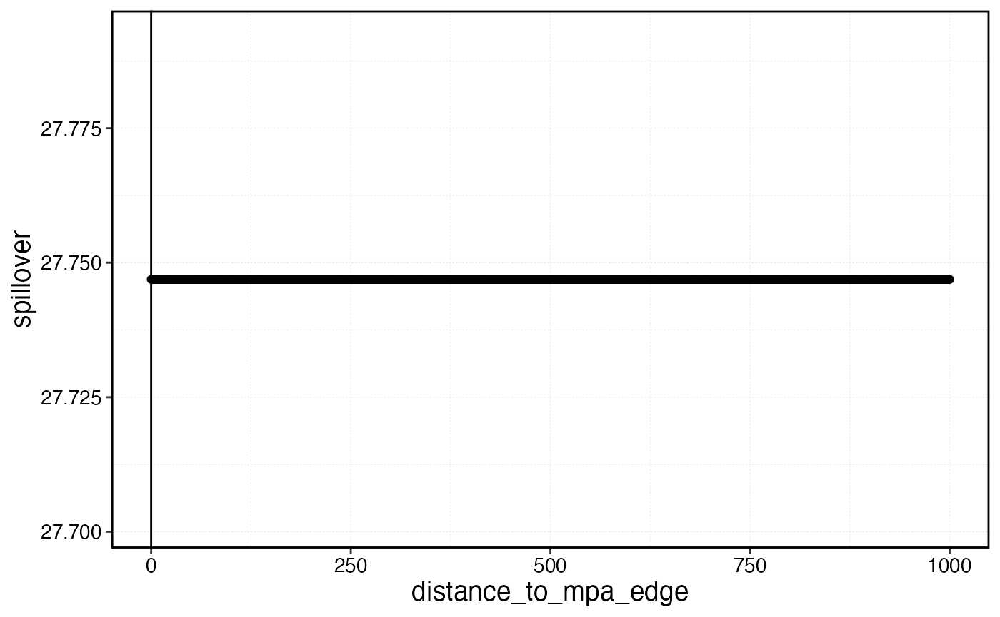
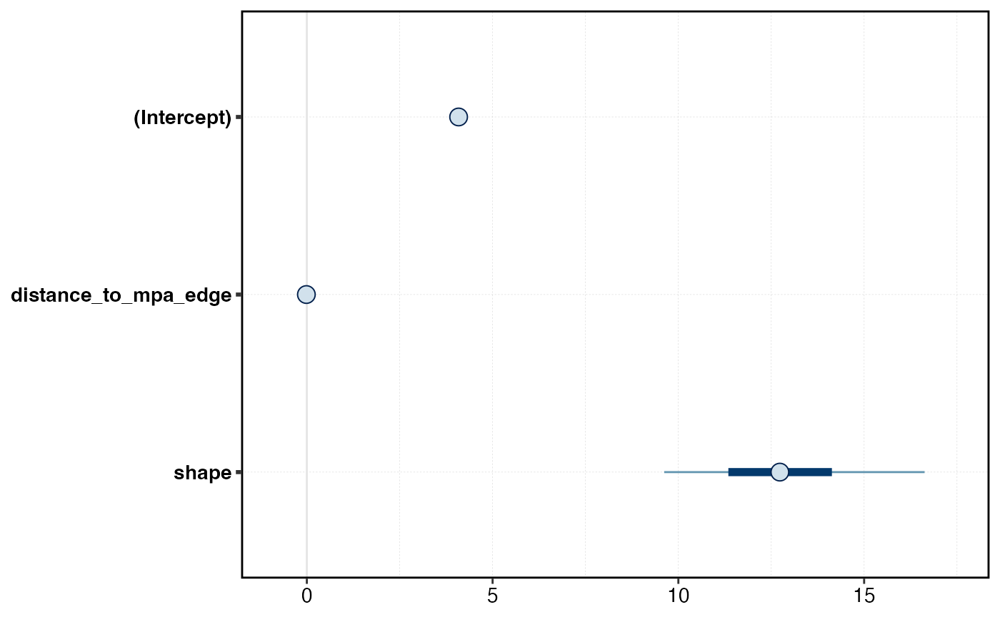
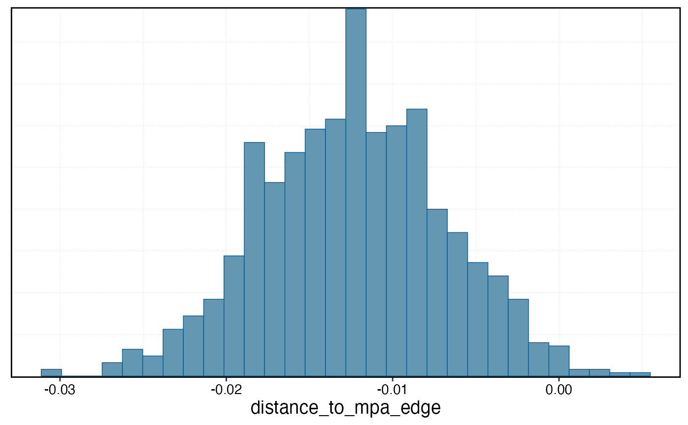
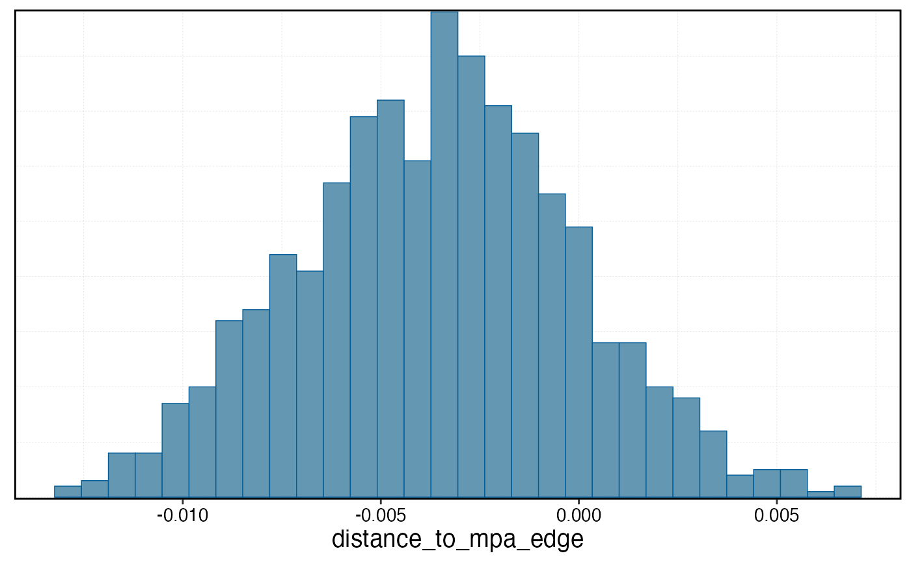
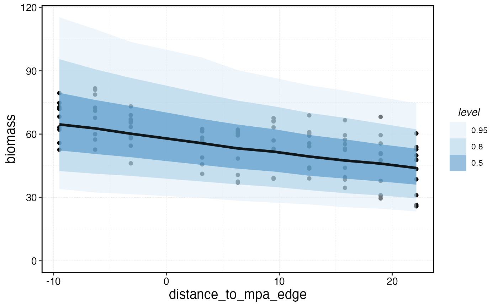

MPA performance is often attempted to be measured by empirical
indicators, such as the biomass inside the reserve relative to the
biomass in a selected reference site outside the reserve. This vignette
shows an example of how to simulate those processes using
marlin.
We’ll first simulate a system with some heterogeneous habitat.
library(marlin)
library(tidyverse)
library(patchwork)
library(rstanarm)
library(ggdist)
library(bayesplot)
theme_set(marlin::theme_marlin())
resolution <- c(10,10) # resolution is in squared patches, so 20 implies a 20X20 system, i.e. 400 patches
patch_area <- 10
seasons <- 2
years <- 20
tune_type <- "depletion"
steps <- years * seasons
yft_diffusion <- 2
yft_depletion <- .2
rec_factor <- 10
mako_depletion <- 0.3
mako_diffusion <- 100
# for now make up some habitat
critters <- c("yellowfin", "mako")
critter_correlation <- -0.4
corr_mat <- matrix( c(1,critter_correlation,critter_correlation,1) , nrow=2 ) # correlation matrix
habitats <- sim_habitat(
critters,
kp = 0.1,
critter_correlations = corr_mat,
resolution = resolution,
patch_area = patch_area
)
critter_habitats <- habitats$critter_distributions |>
group_by(critter) |>
nest() |>
mutate(habitat = map(
data,
\(x) x |> select(-patch) |> pivot_wider(names_from = y, values_from = habitat) |>
select(-x) %>%
as.matrix()
))
habitats$critter_distributions |>
ggplot(aes(x,y,fill = habitat)) +
geom_tile() +
facet_wrap(~critter) +
scale_fill_viridis_c()Simulated Species Habitat
# create a fauna object, which is a list of lists
yft_habitat <- critter_habitats$habitat[[which(critter_habitats$critter == "yellowfin")]]
mako_habitat <- critter_habitats$habitat[[which(critter_habitats$critter == "mako")]]
fauna <-
list(
"yellowfin" = create_critter(
scientific_name = "Thunnus albacares",
habitat = yft_habitat, # pass habitat as lists
recruit_habitat = yft_habitat,
adult_diffusion = yft_diffusion, # cells per year
recruit_diffusion = rec_factor * yft_diffusion,
fished_depletion = yft_depletion, # desired equilibrium depletion with fishing (1 = unfished, 0 = extinct),
density_dependence = "pre_dispersal", # recruitment form, where 1 implies local recruitment
seasons = seasons,
ssb0 = 5000,
),
"mako" = create_critter(
scientific_name = "Isurus oxyrinchus",
habitat = mako_habitat,
recruit_habitat = mako_habitat,
adult_diffusion = mako_diffusion,
recruit_diffusion = rec_factor * .1,
fished_depletion = mako_depletion,
density_dependence = "local_habitat", # recruitment form, where 1 implies local recruitment
burn_years = 200,
ssb0 = 100,
seasons = seasons,
fec_form = "pups",
pups = 2,
lorenzen_m = FALSE
)
)
#> Warning in optim(r0, tune_popsize, lower = 0.001, popsize_target =
#> popsize_target, : bounds can only be used with method L-BFGS-B (or Brent)
#> Warning in optim(r0, tune_popsize, lower = 0.001, popsize_target =
#> popsize_target, : bounds can only be used with method L-BFGS-B (or Brent)
fleets <- list("longline" = create_fleet(list(
`yellowfin` = Metier$new(
critter = fauna$`yellowfin`,
price = 100, # price per unit weight
sel_form = "logistic", # selectivity form, one of logistic or dome
sel_start = .3, # percentage of length at maturity that selectivity starts
sel_delta = .1, # additional percentage of sel_start where selectivity asymptotes
catchability = .01, # overwritten by tune_fleet but can be set manually here
p_explt = 1
),
`mako` = Metier$new(
critter = fauna$`mako`,
price = 10,
sel_form = "logistic",
sel_start = .1,
sel_delta = .01,
catchability = 0,
p_explt = 1
)),
mpa_response = "stay",
base_effort = 1000 * prod(resolution),
spatial_allocation = "rpue",
resolution = resolution
))
a <- Sys.time()
fleets <- tune_fleets(fauna, fleets, tune_type = tune_type) # tunes the catchability by fleet to achieve target depletion
Sys.time() - a
#> Time difference of 34.36743 secs
# run simulations
a <- Sys.time()
spillover_sim <- simmar(fauna = fauna,
fleets = fleets,
years = years)
Sys.time() - a
#> Time difference of 0.1619689 secs
proc_spillover <- process_marlin(spillover_sim, time_step = fauna[[1]]$time_step, keep_age = TRUE)
plot_marlin(
proc_spillover,
max_scale = TRUE,
plot_var = "b",
plot_type = "space"
)
#> Warning in plot_marlin(proc_spillover, max_scale = TRUE, plot_var = "b", : Can
#> only plot one time step for spatial plots, defaulting to last of the supplied
#> steps
plot_marlin(proc_spillover, max_scale = FALSE)
mpa_locations <- expand_grid(x = 1:resolution[1], y = 1:resolution[2]) |>
arrange(x) |>
mutate(patch_name = paste(x,y, sep = "_"))
mpas <- mpa_locations$patch_name[1:round(nrow(mpa_locations) * .3)]
# mpas <- sample(mpa_locations$patch_name, round(nrow(mpa_locations) * 0.2), replace = FALSE, prob = mpa_locations$x)
mpa_locations$mpa <- mpa_locations$patch_name %in% mpas
a <- Sys.time()
mpa_spillover <- simmar(
fauna = fauna,
fleets = fleets,
years = years,
manager = list(mpas = list(locations = mpa_locations,
mpa_year = floor(years * .5)))
)
Sys.time() - a
#> Time difference of 0.08396888 secs
proc_mpa_spillover <- process_marlin(mpa_spillover, time_step = fauna[[1]]$time_step)We can use marlin::get_distance_to_mpas to measure the
euclidian distance between the centroid of each cell and the nearest MPA
cell centroid.
mpa_distances <- get_distance_to_mpas(mpa_locations = mpa_locations, resolution = resolution, patch_area = patch_area)
mpa_distances |>
ggplot(aes(x,y,fill = distance_to_mpa_edge)) +
geom_tile() +
geom_tile(aes(x,y, color = mpa), size = 1.5) +
scale_fill_gradient2(low = "darkblue", high = "green", mid = "white", midpoint = 0)
#> Warning: Using `size` aesthetic for lines was deprecated in ggplot2 3.4.0.
#> ℹ Please use `linewidth` instead.
#> This warning is displayed once every 8 hours.
#> Call `lifecycle::last_lifecycle_warnings()` to see where this warning was
#> generated.Distance of each cell to the nearest MPA edge.
We can also calculate an “MPA gravity”, measured as the sum of all the distances from the current cell to all MPA cells. So, a single MPA patch far from any other MPAs might actually have a lower MPA gravity than a fished patch right next to a very large number of MPA cells.
mpa_distances |>
ggplot(aes(x,y,fill = -total_mpa_distance)) +
geom_tile() +
geom_tile(aes(x,y, color = mpa), size = 1.5) +
scale_fill_viridis_c(name = "MPA gravity",option = "magma", direction = -1)MPA gravity per cell.
Indicators
We can then use these simulated data to generate a series of indicators of MPA performance
Fishing the Line
The complex interactions of the life history and fishing fleet strategies mean that this “fishing the line” behavior results in a linear biomass gradient with distance from the MPA for the tuna, but actually a reverse trend for the shark where biomass is depressed right by the border due to fishing the line, and then increases with distance.
conservation_outcomes <- proc_mpa_spillover$fauna
fishery_outcomes <- proc_mpa_spillover$fleets
a = fishery_outcomes |>
filter(step == max(step), effort > 0) |>
left_join(mpa_distances, by = c("x","y","patch")) |>
ggplot(aes(distance_to_mpa_edge, effort, color = factor(step))) +
geom_point() +
facet_wrap(~critter, scales = "free_y")
b = fishery_outcomes |>
mutate(effort = if_else(effort == 0, NA, effort)) |>
filter(step == max(step)) |>
ggplot(aes(x, y, fill = effort)) +
geom_tile()
a / bDistribution of fishing effort in space post-MPA.
Response Ratios
The most common form of indicator used in the empirical MPA monitoring literature is a “response ratio” r, generally measured as some version of
\[ r = log(\frac{inside}{outside}) \] Which at lower ratio values is roughly equivalent to the percent difference in the metric in question inside the MPA relative to outside.
This can be generalized into a regression of the form
\[ log(Y_i) \sim N(\beta_0 + rMPA_i + \pmb{\beta}\pmb{X_i},\sigma) \] where \(\beta_0\) is the value of outcome Y when MPA = 0, MPA is a dummy variable indicating whether observation i is inside or outside of an MPA, and \(\pmb{\beta}\) is a vector of coefficients for the vector of covariates \(\pmb{X}\).
We can use this equation then to calculate response ratios in various metrics, such as biomass density or mean length of fish.
rr_data <- conservation_outcomes |>
filter(step == max(step) | year == floor(years * .5)) |>
group_by(step, x, y, patch, critter) |>
summarise(biomass = sum(b),
mean_length = weighted.mean(mean_length, n)) |>
left_join(mpa_distances, by = c("x", "y", "patch"))
#> `summarise()` has grouped output by 'step', 'x', 'y', 'patch'. You can override
#> using the `.groups` argument.
rr_data|>
ggplot(aes(distance_to_mpa_edge, biomass, color = factor(step))) +
geom_vline(xintercept = 0) +
geom_jitter() +
facet_wrap( ~ critter, scales = "free_y")Biomass of each species as a function of distance from MPA border. Negative distance means inside the MPA.
rr_data|>
ggplot(aes(distance_to_mpa_edge, mean_length, color = factor(step))) +
geom_vline(xintercept = 0) +
geom_jitter() +
facet_wrap( ~ critter, scales = "free_y") +
scale_y_continuous(name = "Mean Length")Biomass of each species as a function of distance from MPA border. Negative distance means inside the MPA.
Quantifying Gradients
model_critter <- "yellowfin"
baseline <- data.frame(ssb0_p = fauna[[model_critter]]$ssb0_p) |>
mutate(patch = 1:n()) |>
mutate(scaled_ssb0_p = as.numeric(scale(ssb0_p)))
mpa_and_ssb <- mpa_distances |>
left_join(baseline, by = "patch")
survey_indicators = conservation_outcomes |>
filter(step == max(step), critter == model_critter) |>
group_by(step, x, y, patch, critter) |>
summarise(biomass = sum(b),
mean_length = weighted.mean(mean_length, n)) |>
left_join(mpa_and_ssb, by = c("x", "y", "patch")) |>
ungroup()
#> `summarise()` has grouped output by 'step', 'x', 'y', 'patch'. You can override
#> using the `.groups` argument.
response_ratio_model = stan_glm(
biomass ~ mpa + scaled_ssb0_p - 1,
data = survey_indicators,
chains = 1,
cores = 1
)
#>
#> SAMPLING FOR MODEL 'continuous' NOW (CHAIN 1).
#> Chain 1:
#> Chain 1: Gradient evaluation took 0.000768 seconds
#> Chain 1: 1000 transitions using 10 leapfrog steps per transition would take 7.68 seconds.
#> Chain 1: Adjust your expectations accordingly!
#> Chain 1:
#> Chain 1:
#> Chain 1: Iteration: 1 / 2000 [ 0%] (Warmup)
#> Chain 1: Iteration: 200 / 2000 [ 10%] (Warmup)
#> Chain 1: Iteration: 400 / 2000 [ 20%] (Warmup)
#> Chain 1: Iteration: 600 / 2000 [ 30%] (Warmup)
#> Chain 1: Iteration: 800 / 2000 [ 40%] (Warmup)
#> Chain 1: Iteration: 1000 / 2000 [ 50%] (Warmup)
#> Chain 1: Iteration: 1001 / 2000 [ 50%] (Sampling)
#> Chain 1: Iteration: 1200 / 2000 [ 60%] (Sampling)
#> Chain 1: Iteration: 1400 / 2000 [ 70%] (Sampling)
#> Chain 1: Iteration: 1600 / 2000 [ 80%] (Sampling)
#> Chain 1: Iteration: 1800 / 2000 [ 90%] (Sampling)
#> Chain 1: Iteration: 2000 / 2000 [100%] (Sampling)
#> Chain 1:
#> Chain 1: Elapsed Time: 0.027 seconds (Warm-up)
#> Chain 1: 0.025 seconds (Sampling)
#> Chain 1: 0.052 seconds (Total)
#> Chain 1:
response_ratio <- tidybayes::tidy_draws(response_ratio_model) |>
mutate(response_ratio = mpaTRUE / (mpaFALSE) - 1)
response_ratio |>
ggplot(aes(response_ratio)) +
geom_histogram() +
scale_x_continuous(labels = scales::percent, name = "Response Ratio")
#> `stat_bin()` using `bins = 30`. Pick better value with `binwidth`.
Gradients
model_critter <- "mako"
halpern_foo <- function(pars, y, distance_to_mpa, use = "fit") {
yhat = pars[1] / (1 + pars[2] * exp(pars[3] * distance_to_mpa)) + pars[4]
if (use == "fit") {
out <- sum(((yhat) - (y)) ^ 2)
} else {
out <- yhat
}
}
baseline <- data.frame(ssb0_p = fauna[[model_critter]]$ssb0_p) |>
mutate(patch = 1:n()) |>
mutate(scaled_ssb0_p = as.numeric(scale(ssb0_p)))
survey_indicators = conservation_outcomes |>
filter(step == max(step), critter == model_critter) |>
group_by(step, x, y, patch, critter) |>
summarise(biomass = sum(b),
mean_length = weighted.mean(mean_length, n)) |>
left_join(mpa_and_ssb, by = c("x", "y", "patch")) |>
ungroup()
#> `summarise()` has grouped output by 'step', 'x', 'y', 'patch'. You can override
#> using the `.groups` argument.
fishery_indicators <- fishery_outcomes |>
filter(step == max(step), critter == model_critter) |>
group_by(step, x, y, patch, critter, fleet) |>
summarise(
mean_length = weighted.mean(mean_length, catch),
catch = sum(catch),
effort = sum(effort),
cpue = sum(catch) / sum(effort)
) |>
left_join(mpa_and_ssb, by = c("x", "y", "patch")) |>
ungroup()
#> `summarise()` has grouped output by 'step', 'x', 'y', 'patch', 'critter'. You
#> can override using the `.groups` argument.
test <- optim(rep(0,4),lower = c(-Inf,0,-Inf,0),halpern_foo, y = survey_indicators$biomass, distance_to_mpa = survey_indicators$distance_to_mpa_edge, control = list(eval.max = 1000, iter.max = 1000))
#> Warning in optim(rep(0, 4), lower = c(-Inf, 0, -Inf, 0), halpern_foo, y =
#> survey_indicators$biomass, : bounds can only be used with method L-BFGS-B (or
#> Brent)
#> Warning in optim(rep(0, 4), lower = c(-Inf, 0, -Inf, 0), halpern_foo, y =
#> survey_indicators$biomass, : unknown names in control: eval.max, iter.max
out <- halpern_foo(
test$par,
y = survey_indicators$biomass,
distance_to_mpa = survey_indicators$distance_to_mpa_edge,
use = "predict"
)
plot(survey_indicators$biomass)
lines(out)
spillpars <- test$par
spillpars[4] <- 0
dists <- seq(0,1000)
spillover <- halpern_foo(
spillpars,
y = survey_indicators$biomass,
distance_to_mpa = dists,
use = "predict"
)
zerotol <- 0.05
spillplot <- data.frame(distance_to_mpa_edge =dists, spillover = spillover)
spillover_distance <- spillplot |>
filter(spillover < (1 + zerotol) * min(spillover)) |>
slice(1)
spillplot |>
ggplot(aes(distance_to_mpa_edge, spillover)) +
geom_point() +
geom_vline(xintercept = spillover_distance$distance_to_mpa_edge)
Aha, so use the model, then calculate the distance at which the predicted
b_gradient_model = stan_glm(
biomass ~ distance_to_mpa_edge,
data = survey_indicators |> filter(!mpa),
family = Gamma(link = "log"),
chains = 1,
cores = 1
)
#>
#> SAMPLING FOR MODEL 'continuous' NOW (CHAIN 1).
#> Chain 1:
#> Chain 1: Gradient evaluation took 6.7e-05 seconds
#> Chain 1: 1000 transitions using 10 leapfrog steps per transition would take 0.67 seconds.
#> Chain 1: Adjust your expectations accordingly!
#> Chain 1:
#> Chain 1:
#> Chain 1: Iteration: 1 / 2000 [ 0%] (Warmup)
#> Chain 1: Iteration: 200 / 2000 [ 10%] (Warmup)
#> Chain 1: Iteration: 400 / 2000 [ 20%] (Warmup)
#> Chain 1: Iteration: 600 / 2000 [ 30%] (Warmup)
#> Chain 1: Iteration: 800 / 2000 [ 40%] (Warmup)
#> Chain 1: Iteration: 1000 / 2000 [ 50%] (Warmup)
#> Chain 1: Iteration: 1001 / 2000 [ 50%] (Sampling)
#> Chain 1: Iteration: 1200 / 2000 [ 60%] (Sampling)
#> Chain 1: Iteration: 1400 / 2000 [ 70%] (Sampling)
#> Chain 1: Iteration: 1600 / 2000 [ 80%] (Sampling)
#> Chain 1: Iteration: 1800 / 2000 [ 90%] (Sampling)
#> Chain 1: Iteration: 2000 / 2000 [100%] (Sampling)
#> Chain 1:
#> Chain 1: Elapsed Time: 0.035 seconds (Warm-up)
#> Chain 1: 0.035 seconds (Sampling)
#> Chain 1: 0.07 seconds (Total)
#> Chain 1:
plot(b_gradient_model)
cpue_gradient_model = stan_glm(
cpue ~ distance_to_mpa_edge,
data = fishery_indicators |> filter(!mpa),
family = Gamma(link = "log"),
chains = 1,
cores = 1
)
#>
#> SAMPLING FOR MODEL 'continuous' NOW (CHAIN 1).
#> Chain 1:
#> Chain 1: Gradient evaluation took 1.9e-05 seconds
#> Chain 1: 1000 transitions using 10 leapfrog steps per transition would take 0.19 seconds.
#> Chain 1: Adjust your expectations accordingly!
#> Chain 1:
#> Chain 1:
#> Chain 1: Iteration: 1 / 2000 [ 0%] (Warmup)
#> Chain 1: Iteration: 200 / 2000 [ 10%] (Warmup)
#> Chain 1: Iteration: 400 / 2000 [ 20%] (Warmup)
#> Chain 1: Iteration: 600 / 2000 [ 30%] (Warmup)
#> Chain 1: Iteration: 800 / 2000 [ 40%] (Warmup)
#> Chain 1: Iteration: 1000 / 2000 [ 50%] (Warmup)
#> Chain 1: Iteration: 1001 / 2000 [ 50%] (Sampling)
#> Chain 1: Iteration: 1200 / 2000 [ 60%] (Sampling)
#> Chain 1: Iteration: 1400 / 2000 [ 70%] (Sampling)
#> Chain 1: Iteration: 1600 / 2000 [ 80%] (Sampling)
#> Chain 1: Iteration: 1800 / 2000 [ 90%] (Sampling)
#> Chain 1: Iteration: 2000 / 2000 [100%] (Sampling)
#> Chain 1:
#> Chain 1: Elapsed Time: 0.033 seconds (Warm-up)
#> Chain 1: 0.035 seconds (Sampling)
#> Chain 1: 0.068 seconds (Total)
#> Chain 1:
effort_gradient_model = stan_glm(
effort ~ distance_to_mpa_edge + scaled_ssb0_p,
data = fishery_indicators |> filter(!mpa),
family = Gamma(link = "log"),
chains = 1,
cores = 1
)
#>
#> SAMPLING FOR MODEL 'continuous' NOW (CHAIN 1).
#> Chain 1:
#> Chain 1: Gradient evaluation took 1.3e-05 seconds
#> Chain 1: 1000 transitions using 10 leapfrog steps per transition would take 0.13 seconds.
#> Chain 1: Adjust your expectations accordingly!
#> Chain 1:
#> Chain 1:
#> Chain 1: Iteration: 1 / 2000 [ 0%] (Warmup)
#> Chain 1: Iteration: 200 / 2000 [ 10%] (Warmup)
#> Chain 1: Iteration: 400 / 2000 [ 20%] (Warmup)
#> Chain 1: Iteration: 600 / 2000 [ 30%] (Warmup)
#> Chain 1: Iteration: 800 / 2000 [ 40%] (Warmup)
#> Chain 1: Iteration: 1000 / 2000 [ 50%] (Warmup)
#> Chain 1: Iteration: 1001 / 2000 [ 50%] (Sampling)
#> Chain 1: Iteration: 1200 / 2000 [ 60%] (Sampling)
#> Chain 1: Iteration: 1400 / 2000 [ 70%] (Sampling)
#> Chain 1: Iteration: 1600 / 2000 [ 80%] (Sampling)
#> Chain 1: Iteration: 1800 / 2000 [ 90%] (Sampling)
#> Chain 1: Iteration: 2000 / 2000 [100%] (Sampling)
#> Chain 1:
#> Chain 1: Elapsed Time: 0.036 seconds (Warm-up)
#> Chain 1: 0.04 seconds (Sampling)
#> Chain 1: 0.076 seconds (Total)
#> Chain 1:
mcmc_hist(b_gradient_model, pars = "distance_to_mpa_edge")
#> `stat_bin()` using `bins = 30`. Pick better value with `binwidth`.
mcmc_hist(effort_gradient_model, pars = "distance_to_mpa_edge")
#> `stat_bin()` using `bins = 30`. Pick better value with `binwidth`.
predictions <- posterior_predict(b_gradient_model, newdata = survey_indicators |> mutate(scaled_ssb0_p = 0), type = "response") |>
as.data.frame() |>
mutate(iteration = 1:n()) |>
pivot_longer(-iteration, names_to = "patch", values_to = "biomass_hat",
names_transform = list(patch = as.integer)) |>
left_join(mpa_and_ssb, by = "patch")
survey_indicators |>
ggplot(aes(distance_to_mpa_edge, biomass)) +
geom_point() +
stat_lineribbon(data = predictions, aes(distance_to_mpa_edge, biomass_hat), alpha = 0.5) +
scale_fill_brewer() +
scale_y_continuous(limits = c(0, NA))